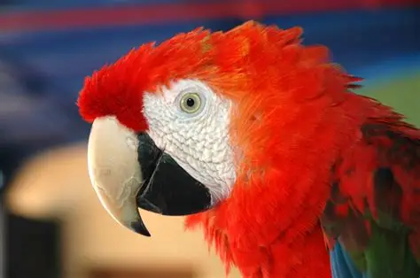
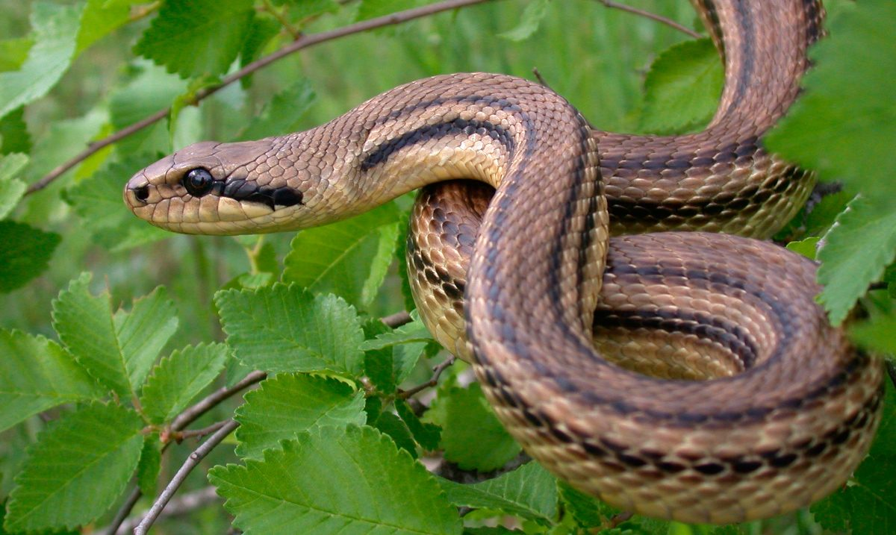
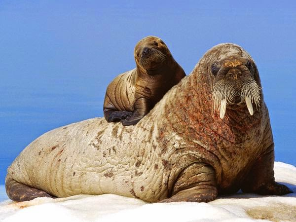

🦁 León
Descripción: Gran felino conocido como el rey de la selva.
Hábitat: Sabanas africanas.
Alimentación: Carnívoro.
Dato curioso: Su rugido puede escucharse hasta a 8 km.
En ZooVida creemos que conocer la naturaleza es el primer paso para protegerla. Nuestro zoológico alberga una gran variedad de especies provenientes de diferentes partes del mundo, ofreciendo experiencias educativas, recreativas y de conservación para toda la familia.
Recorre nuestros hábitats temáticos, participa en actividades interactivas y descubre la increíble diversidad animal en un entorno diseñado para el bienestar de cada especie.
Explorar el zoológico
Conoce algunas de las especies que habitan en ZooVida, clasificadas por categoría.
Descripción: Gran felino conocido como el rey de la selva.
Hábitat: Sabanas africanas.
Alimentación: Carnívoro.
Dato curioso: Su rugido puede escucharse hasta a 8 km.

Descripción: El mamífero terrestre más grande del mundo.
Hábitat: Sabanas y bosques.
Alimentación: Herbívoro.
Dato curioso: Puede reconocer su reflejo en un espejo.

Descripción: Ave tropical de colores intensos.
Hábitat: Selvas de América.
Alimentación: Frutas, semillas y nueces.
Dato curioso: Puede imitar sonidos humanos.

Descripción: Una de las aves rapaces más poderosas.
Hábitat: Montañas y zonas abiertas.
Alimentación: Carnívora.
Dato curioso: Su visión es hasta 8 veces mejor que la humana.

Descripción: Reptil semiacuático de gran tamaño.
Hábitat: Ríos y lagunas tropicales.
Alimentación: Carnívoro.
Dato curioso: Puede permanecer inmóvil durante horas.

Descripción: Reptil de cuerpo alargado que se desplaza sin patas y posee una gran capacidad de adaptación.
Hábitat: Bosques, desiertos, selvas y praderas de todo el mundo.
Alimentación: Carnívora; consume roedores, aves, huevos y otros pequeños animales.
Dato curioso: Algunas especies pueden detectar el calor corporal de sus presas incluso en la oscuridad.

Descripción: Mamífero marino altamente inteligente.
Hábitat: Océanos y mares.
Alimentación: Peces y moluscos.
Dato curioso: Se comunica mediante silbidos y clics.

Descripción: Mamífero marino de gran tamaño conocido por sus largos colmillos y gruesa capa de grasa.
Hábitat: Aguas frías y regiones costeras del Océano Ártico.
Alimentación: Carnívora; se alimenta principalmente de moluscos, crustáceos y otros organismos marinos.
Dato curioso: Sus colmillos pueden medir más de un metro y los utiliza para defenderse y ayudarse a salir del agua.
Una pequeña ventana a la magia de nuestro zoológico: animales, instalaciones, actividades educativas y eventos especiales que hacen de cada visita una experiencia inolvidable.

El gran felino de la selva tropical, con su pelaje naranja y rayas negras únicas.

Ave de colores espectaculares originaria de las selvas de América Central y del Sur.

Su colores brillantes advierten a los depredadores: ¡soy peligrosa! Habita selvas húmedas.

El felino más grande de América, símbolo de fuerza y misterio en la selva.

Ágil habitante de los doselares tropicales, se desplaza entre ramas con gran destreza.

El rey de las sabanas, conocido por su imponente melena y su poderoso rugido.

El animal terrestre más alto del mundo; su cuello le permite alcanzar hojas en lo alto de los árboles.

El mamífero terrestre más grande; de gran inteligencia y fuerte vínculo social.

El animal terrestre más veloz del mundo, alcanza hasta 120 km/h en pocos segundos.

Sus rayas únicas las distinguen en las manadas y confunden a los depredadores.

Mamífero marino altamente inteligente, conocido por su carácter juguetón y comunicación avanzada.

Ave marina que no puede volar, pero nada con una elegancia y velocidad sorprendentes.

Viajeras del océano que pueden recorrer miles de kilómetros a lo largo de su vida.

El pez más grande del mundo, pacífico filtrador que recorre los océanos tropicales.

Elegante habitante del océano que parece volar bajo el agua con sus aletas extendidas.

El mayor carnívoro terrestre del ártico; su pelaje blanco lo camufla en el hielo y nieve.

Reconocible por sus largos colmillos; se reúne en colonias sobre bancos de hielo árticos.

Ágil depredador de los mares del sur, conocido por su velocidad y su manchado caracteristico.

Ave rapaz de los territorios árticos, caza tanto de día como de noche en la tundra.

Omnívoro poderoso de las regiones frías del norte; hiberna durante los meses de invierno.

El "barco del desierto"; sus jorobas almacenan grasa que le permite sobrevivir semanas sin agua.

Sus enormes orejas disipan el calor; el zorro más pequeño del mundo habita el Sahara.

Vibra su cola como advertencia; una de las serpientes más características del desierto americano.

Arácnido resistente que sobrevive en condiciones extremas de calor y escasez de agua.

Adaptable y astuto, el coyote prospera tanto en desiertos áridos como en zonas suburbanas.
Aprovecha nuestros paquetes y descuentos para vivir una experiencia inolvidable en familia o con tus amigos.
Acceso completo al zoológico con mapa interactivo y guía de horarios de actividades.
por persona / válido de lunes a viernes
La mejor opción para disfrutar en familia. Incluye acceso completo, show de animales y almuerzo.
hasta 4 personas (2 adultos + 2 niños)
Una experiencia única para descubrir la vida salvaje cuando cae la noche. Animales nocturnos activos.
por persona / viernes y sábados 19:00–22:00
Descuento especial para estudiantes universitarios. Incluye acceso completo al zoológico.
por persona / válido con credencial de estudiante / No es compatible con el Zoo nocturno